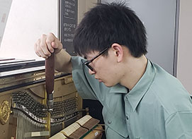

商品ラインナップ
新品、中古ピアノから電子ピアノまで豊富な品揃え！
※写真はイメージです
-
- 電子ピアノ
 よりリーズナブルな中古（1点モノ!）の
よりリーズナブルな中古（1点モノ!）の
取り扱いもあり。 -
- 消音付機付きピアノ
 タッチと防音の両立。
タッチと防音の両立。
ほとんどのアップライトピアノに取り付け可能。 -
- アップライトピアノ
- ずっと安心して弾くための
中古は全品5年（新品は10年）保証付き。 -
- グランドピアノ
 すべての入門者にとって憧れのグランドピアノ。
すべての入門者にとって憧れのグランドピアノ。
ピアノレンタル
初年度は月額¥2,200～
諸事情によりお迷いの方は毎日の練習のためにご活躍を。
アクセサリー
アフターサービス
ご購入後の調律、ピアノのお引越し、クリーニング、オーバーホールにつきましてもお気軽にご相談ください。
私たちがサポートします！


- 
お客様の声
レビュー・口コミサイトより
-
名古屋
レンタルピアノで平日に行きました。
いろんなメーカーのピアノが沢山あって驚きました。いつも前を通るのですが、前から中が気になってました笑
お店の方は皆さん優しい対応で好感持てました。 -

岐阜店
岐阜店 ピアノの金額と子供のやる気のバランスで悩んでいた所を、ハッキリとした口調の店員さんに背中を押してもらいました。正直全く知らないピアノでしたが、外観がオシャレで気に入ったし、値段も手頃で助かりました
-

知立店
やはり中古ピアノ屋さんは試奏が気楽にさせてもらえるので楽しいです。 訳ありのグランドピアノを破格で買いました。音が気に入ったので、今も満足しています。 お店の方も感じが良く、楽しくお買い物できました。
-
豊橋店
女性の店員さんが、とても丁寧に詳しく説明してくださり、更にピアノを購入したくなりました！ゆっくり家族と検討して、決めたいと思いました！
FAQ
-
ピアノがはじめてで何も分からないのですが、大丈夫ですか？
大丈夫です！ピアノのご説明からご購入後のアフターケアまでお任せ下さい。 もし、不安でしたらレンタルピアノからお試し下さい。
-
見学だけでも大丈夫ですか？
もちろんです。実際のピアノを見て、イメージしてください。気になる事や不安な事など、お気軽にご質問ください。
-
マンションなのでサイレント付のピアノはありますか？
電子ピアノであれば音を消して弾けますし、アップライトピアノへの消音機能の後付けも可能です。まずはピアノを置かれる環境からご相談ください。
-
ピアノを2階に置きたいのですが、補強は必要ですか？
電子ピアノであればほとんど補強の必要はありません。またアップライトピアノでも200～260㎏を4点（１点あたり50～65㎏）で支えておりますので、こちらもほとんど問題ありません。
店舗のご案内
中部エリア4店舗展開中